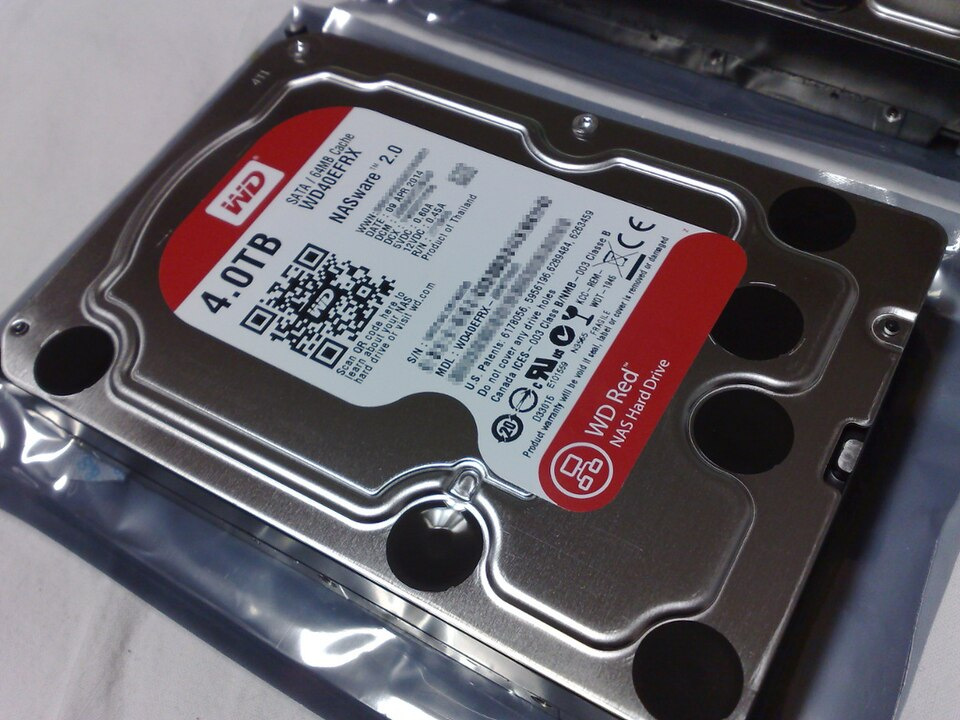

Los 5 mejores discos duros para NAS doméstico en 2026
El disco duro es el componente más importante de tu NAS: es donde viven tus fotos, tus copias de seguridad y tu colección de medios. Y también es donde más dinero se pierde por comprar mal. Un disco de escritorio barato metido en un NAS con RAID puede darte años de disgustos, mientras que el disco adecuado, elegido por perfil de uso, trabaja silencioso durante años.

En esta guía explicamos primero el concepto clave que casi nadie conoce —CMR frente a SMR— y después seleccionamos 5 opciones por perfil: el silencioso, el de capacidad máxima y el de mejor calidad-precio, entre otros.
CMR vs. SMR: lo único que de verdad tienes que entender
Los discos duros modernos graban los datos en pistas magnéticas de dos formas distintas:
- CMR (grabación magnética convencional): las pistas no se solapan. La escritura es directa y predecible, y el disco rinde bien bajo carga constante. Es la tecnología recomendada para NAS.
- SMR (grabación magnética solapada): las pistas se solapan como tejas para meter más capacidad en el mismo espacio. Funciona bien para almacenar archivos que casi no cambian, pero las reescrituras son lentas y, según reportan comunidades de usuarios de NAS, pueden causar problemas graves en reconstrucciones RAID: tiempos eternos, caídas del array e incluso pérdida de datos en el peor caso.
La trampa: algunos fabricantes vendieron discos SMR dentro de gamas "para NAS" sin indicarlo claramente en la ficha técnica, lo que generó una polémica considerable hace unos años. Hoy la mayoría lo especifica, pero verifica siempre en la hoja de datos oficial que el modelo concreto que vas a comprar sea CMR antes de meterlo en un RAID.
Regla de oro: para NAS con RAID, solo CMR. Los SMR quedan relegados a almacenamiento externo de copia fría donde apenas se reescribe.
Los 5 mejores, por perfil
1. El equilibrado: WD Red Plus
La gama Red Plus de Western Digital es CMR en todos sus modelos, está diseñada específicamente para NAS de 1 a 8 bahías y es la recomendación por defecto de la mayoría de comunidades de usuarios. Disponible desde 4 TB hasta 14 TB, con 3 años de garantía según el fabricante. Es el disco "que no falla en la elección": ni el más barato ni el más rápido, pero el más seguro para un primer NAS.
Ver precio del WD Red Plus en la capacidad que necesites.
2. El silencioso: Seagate IronWolf (no Pro)
Si el NAS va a estar en el salón o en un despacho, el ruido importa. La serie IronWolf estándar de Seagate (CMR, pensada para NAS de hasta 8 bahías) tiene fama entre los usuarios de ser de las más silenciosas en su clase, con 5400 rpm en las capacidades medias que ayudan a mantener bajo el nivel sonoro. Garantía de 3 años según el fabricante. Ideal si el NAS duerme en la misma habitación que tú.
Ver precio del Seagate IronWolf.
3. La mejor calidad-precio: Toshiba N300
Toshiba juega en la misma liga con su serie N300 para NAS, CMR, con 7200 rpm y un precio por TB que suele estar entre los más competitivos de las tres grandes marcas (septiembre de 2026). Garantía de 3 años según el fabricante. A cambio de ese precio, son algo más ruidosos y calientes que sus rivales de 5400 rpm, así que convienen más en un NAS ubicado en un armario o trastero ventilado que junto al televisor.
Ver precio del Toshiba N300.
4. Capacidad máxima: WD Red Pro o Seagate IronWolf Pro
Si tu NAS tiene pocas bahías y quieres exprimir cada una, las gamas Pro llegan a 20–24 TB por disco, con 7200 rpm, 5 años de garantía según el fabricante y diseño para NAS de hasta 24 bahías. Son más caros por unidad, pero el precio por TB en las capacidades altas suele ser de los mejores del mercado (septiembre de 2026). Ojo: a 7200 rpm y con tanta densidad, generan más ruido, calor y vibración; conviene un NAS con buena ventilación.
Ver precio de las versiones Pro de alta capacidad.
5. El de bajo consumo: WD Red Plus de 5400 rpm en 4–6 TB
Para un NAS de 2 bahías que estará encendido 24/7 con uso ligero (copias de seguridad, documentos, fotos familiares), un Red Plus de 5400 rpm en capacidades modestas es difícil de batir: CMR, silencioso, fresco y con el consumo más bajo de la comparativa según las especificaciones del fabricante. No es el más rápido, pero para este perfil la velocidad sobra.
Ver precio del WD Red Plus de 4 TB, el punto de entrada más sensato.
Tabla comparativa
| Modelo | Capacidades | Tecnología | RPM | Garantía* | Perfil ideal |
|---|---|---|---|---|---|
| WD Red Plus | 4–14 TB | CMR | 5400 | 3 años | Equilibrado, primer NAS |
| Seagate IronWolf | 4–12 TB | CMR | 5400–5900 | 3 años | Silencioso, salón/despacho |
| Toshiba N300 | 4–18 TB | CMR | 7200 | 3 años | Calidad-precio |
| WD Red Pro / IronWolf Pro | 12–24 TB | CMR | 7200 | 5 años | Capacidad máxima |
| WD Red Plus 4–6 TB | 4–6 TB | CMR | 5400 | 3 años | Bajo consumo, NAS 24/7 ligero |
*Garantía según las especificaciones publicadas por cada fabricante; puede variar por región y distribuidor.
Consejos rápidos antes de comprar
- Compra los discos por parejas (o más) del mismo modelo y capacidad si vas a usar RAID: mezclar modelos distintos funciona, pero el array se limita al disco más pequeño y lento.
- No llenes el NAS al 100 %: deja al menos un 10–20 % libre; los sistemas de archivos y el RAID rinden peor al límite.
- El RAID no es una copia de seguridad: protege contra el fallo de un disco, no contra borrados accidentales, ransomware o incendios. Mantén una copia externa de lo irremplazable.
- Vigila la temperatura: la comunidad de usuarios reporta que los discos que trabajan frescos (por debajo de 40–45 °C de forma sostenida) tienden a durar más. Un NAS con buena ventilación vale su peso en oro.
Cómo elaboramos esta comparativa
Evaluamos estos criterios: tecnología de grabación (CMR frente a SMR), nivel de ruido y vibración, precio por TB, garantía del fabricante y adecuación al uso en NAS doméstico con RAID. Las fuentes fueron las hojas de especificaciones oficiales de Western Digital, Seagate y Toshiba, la documentación de sistemas NAS populares (Synology, QNAP, TrueNAS) sobre compatibilidad de discos, y el consenso de comunidades de usuarios sobre fiabilidad y ruido en uso real.
No realizamos pruebas físicas propias: no compramos ni medimos estos discos en nuestro laboratorio. Las valoraciones de ruido y fiabilidad reflejan especificaciones oficiales y experiencias reportadas por la comunidad, no mediciones nuestras.
Veredicto por caso de uso
- Primer NAS, sin complicaciones: WD Red Plus. CMR garantizado, silencioso y con la mejor relación riesgo/precio.
- NAS en el salón: Seagate IronWolf estándar de 5400 rpm. El más discreto acústicamente de la lista.
- Máximo TB por euro/dólar: Toshiba N300, aceptando algo más de ruido y calor.
- Pocas bahías, mucha capacidad: gamas Pro de 20 TB o más; el precio por TB compensa si llenas cada bahía.
- NAS 24/7 de uso ligero: Red Plus de 5400 rpm en 4–6 TB; fresco, silencioso y barato de operar.
Preguntas frecuentes
¿Puedo usar un disco duro normal de escritorio en mi NAS?
Funcionar, funciona, pero no es recomendable: los discos de escritorio no están diseñados para vibración continua ni para el control de errores que exige el RAID, y la comunidad de usuarios reporta más problemas con ellos en arrays. Para un NAS que estará años encendido, un disco de gama NAS (CMR) es la inversión sensata.
¿Cómo sé si un disco es CMR o SMR antes de comprarlo?
Consulta la hoja de datos oficial del modelo exacto en la web del fabricante: la tecnología de grabación suele aparecer como "CMR" o "conventional magnetic recording". Desconfía de fichas de tiendas que no lo indican y evita cualquier modelo donde no puedas confirmarlo.
¿Merece la pena pagar más por la gama Pro?
Depende de tu NAS: si tienes 8 bahías o menos y no necesitas más de 12–14 TB por disco, la gama estándar basta y es más silenciosa. La gama Pro compensa cuando necesitas la máxima densidad por bahía o valoras los 5 años de garantía.
¿Cuántos discos necesito para empezar?
Con dos discos en espejo (RAID 1) ya tienes tolerancia al fallo de un disco, y es el punto de partida más común en NAS domésticos de 2 bahías. Añade más discos cuando necesites más capacidad, no antes.
Rangos de precio orientativos, verificados en septiembre de 2026. Los precios y la disponibilidad pueden cambiar.